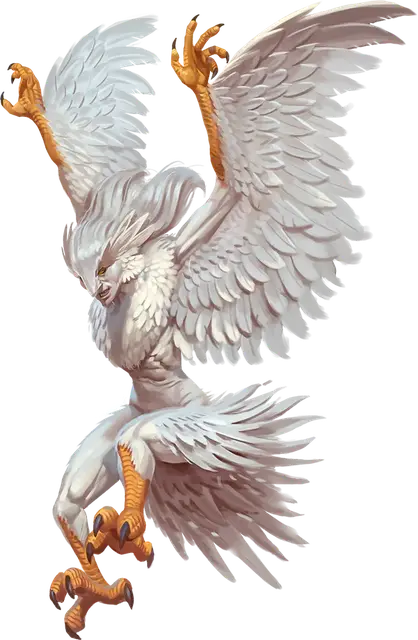

Гардинал аворал
Avoral Guardinal
Средний Небожитель, нейтрально-добрый

Класс Доспеха 16 (природный доспех)
Хиты 172 (23к8 + 69)
Скорость 30 футов, летая 50 футов
| мод | спас | ||
|---|---|---|---|
| СИЛ | 16 | +3 | +3 |
| ЛОВ | 19 | +4 | +8 |
| ТЕЛ | 17 | +3 | +3 |
| мод | спас | ||
|---|---|---|---|
| ИНТ | 16 | +3 | +3 |
| МДР | 16 | +3 | +3 |
| ХАР | 18 | +4 | +8 |
Навыки Восприятие +11, Религия +7
Сопротивление урону излучение
Иммунитет к состояниям испуг
Чувства тёмное зрение 120 футов, пассивное Восприятие 21
Языки Общий, Небесный
Опасность 9 (5000 опыта)
Бонус мастерства +4
Особенности
Облёт. Аворал не провоцирует атаки, когда вылетает из досягаемости врага.
Пикирующая атака. Если аворал летит и пикирует как минимум на 30 футов по прямой к существу Среднего размера или меньше, а затем останавливается в 5 футах от него, существо должно совершить спасбросок Силы Сл 15, иначе получит 14 (4к6) колющего урона.
Действия
Мультиатака. Аворал совершает две атаки Когтём. Он может заменить одну из атак Использованием заклинания.
Коготь. . Рукопашная атака оружием: +8 к попаданию, досягаемость 5 футов, одна цель. Попадание: 11 (2к6 + 4) колющего урона плюс 13 (2к12) урона излучением.
Использование заклинаний. Аворал накладывает одно из следующих заклинаний, не нуждаясь в материальных компонентах, используя Харизму в качестве базовой характеристики (Сл спасброска заклинания 16):
• 1/день: приказ [command], удержание личности [hold person]
Описание
Аворалы - двуногие, похожие на орлов, с крылатыми руками и проницательными золотистыми глазами. Склонные к странствиям, эти птицеподобные Небожители покидают Элизиум чаще, чем их собратья, блуждая по Внешним землям, куда бы их ни занесли ветры. Одиночные разведчики и застрельщики, аворалы - проворные летающие воины, способные стремительно пикировать на врагов с небес и вонзать в них свои бритвенные когти.
Гардиналы
Кочевые и миролюбивые, гардиналы - это животные Небожители, родом из Элизиума. Гардинал напоминают гуманоидов со звериными чертами. В своем повседневном общении гардиналы воплощают красоту, спокойствие и праведность своего родного плана. Гардиналов можно найти на всех Внешних землях, особенно в Экстазии, портальном городе Элизиума, и в Фаунеле, портальном городе Звериных земель.
В то время как гардиналы обычно дружелюбны и не склонны к гневу, их сверхъестественная добродетель ставит их в противоборство со злыми существами Нижних планов. Гардиналы ненавидят зло и без колебаний выступают против несправедливости и злодейства, полные решимости искоренить силы, угрожающие красоте и миру.